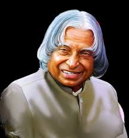
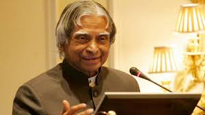
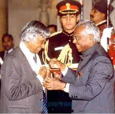
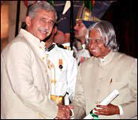
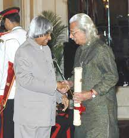
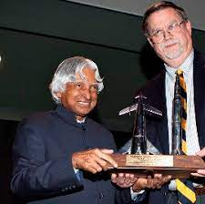

Dr.Apj Abdul Kalam
The Missile Man of India
Scientist
After graduating from the Madras Institute of Technology in 1960, Kalam joined the Aeronautical Development Establishment of the Defence Research and Development Organisation (by Press Information Bureau, Government of India) as a scientist after becoming a member of the Defence Research Development Service (DRDS). He started his career by designing a small hovercraft, but remained unconvinced by his choice of a job at DRDO.[26] Kalam was also part of the INCOSPAR committee working under Vikram Sarabhai, the renowned space scientist.[13] In 1969, Kalam was transferred to the Indian Space Research Organisation (ISRO) where he was the project director of India's first Satellite Launch Vehicle (SLV-III) which successfully deployed the Rohini satellite in near-earth orbit in July 1980; Kalam had first started work on an expandable rocket project independently at DRDO in 1965.[1] In 1969, Kalam received the government's approval and expanded the programme to include more engineers.[25]
Presidency
Kalam served as the 11th president of India, succeeding K. R. Narayanan. He won the 2002 presidential election with an electoral vote of 922,884, surpassing the 107,366 votes won by Lakshmi Sahgal. His term lasted from 25 July 2002 to 25 July 2007.[38] On 10 June 2002, the National Democratic Alliance (NDA) which was in power at the time, expressed that they would nominate Kalam for the post of President,[39][40] and both the Samajwadi Party and the Nationalist Congress Party backed his candidacy.[41][42] After the Samajwadi Party announced its support for Kalam, Narayanan chose not to seek a second term in office, leaving the field clear.[43] Kalam said of the announcement of his candidature:

"A dream is not what you see in your sleep,A dream is something that does not let you sleep" .APJ Abdul Kalam
Awards
Bharat Ratna
1997
Is the highest civilian award of the Republic of India
Padma Vibhushan
1990
Is the second highest civilian award of the Republic of India
Padma Bhusan
1981
Is the third highest civilian award of Republic of India
Von Braun
2013
To recognize excellence in management and leadership for space advocacy
Writings
- India 2020, 1998
- wings of fire, 1999
- Ignite Minds, 2002
- Indomitable spirit, 2006
- Target 3 Billion, 2011
- Transcendence:My siritual Experience, 2015
Biographies
- Eternal Quest, 2002
- president APJ, 2002
- The visionary of India, 2002
- A little dream, 2008
- The Kalam Effect,2008
- The peoples president, 2016
About the Author
Made byMe for Lushi blog
Techs used
Html,css,vscode
content Disclaimer
The content of this website is mostly coied fromwikipediaand other resource